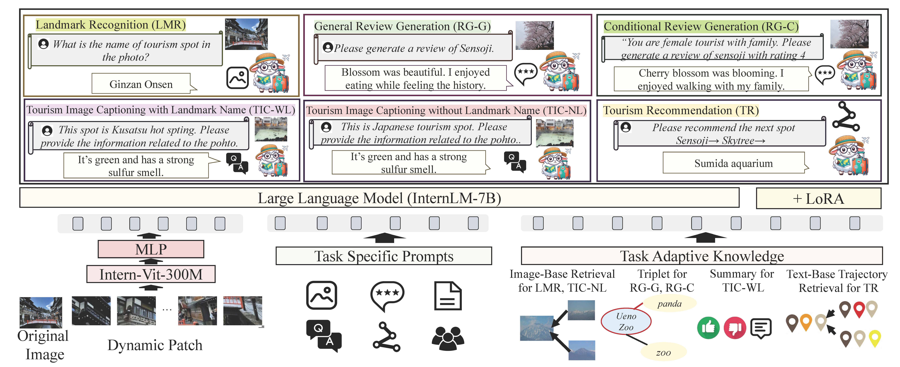
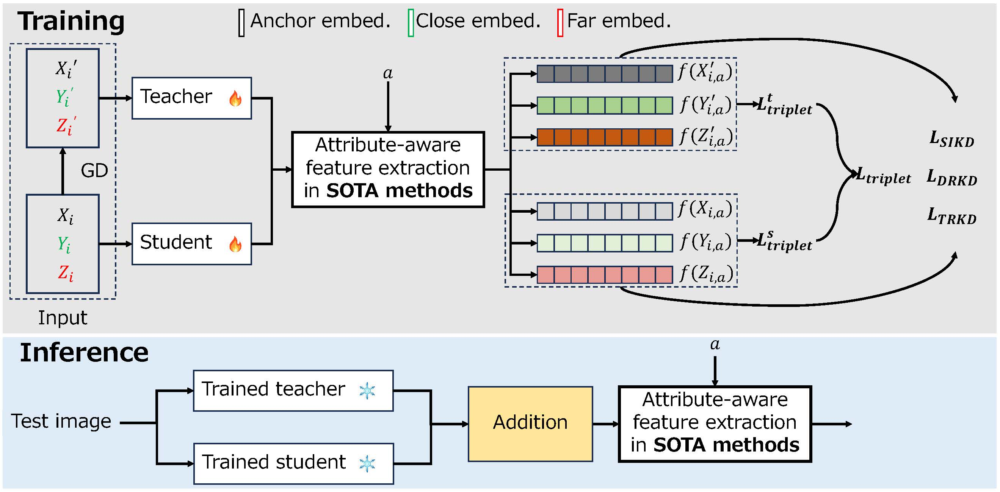

Selected Publications
-
TourMLLM: A Retrieval-Augmented Multimodal Large Language Model for Multitask Learning in the Tourism Domain,
H. Yamanishi, L. Xiao* (corresponding author), and T. Yamasaki,
ICMR, pp. 1654–1663, 2025, Best paper award!

Fig. 1. Overview of TourMLLM: retrieval-augmented pipeline for tourism tasks.
-
Multi-level Knowledge Distillation for Fine-grained Fashion Image Retrieval,
L. Xiao and T. Yamasaki,
Knowledge-Based Systems, vol. 310, p. 112955, 2025.

Fig. 1. Details of the proposed MKD.